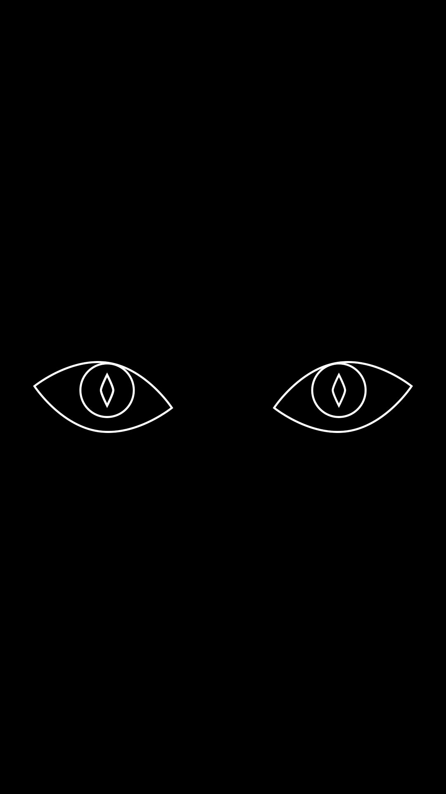
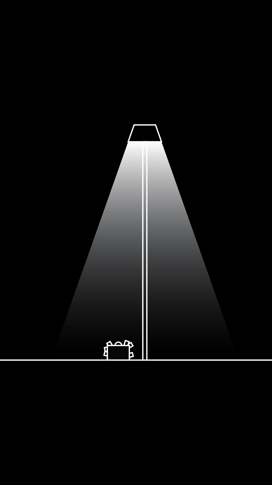
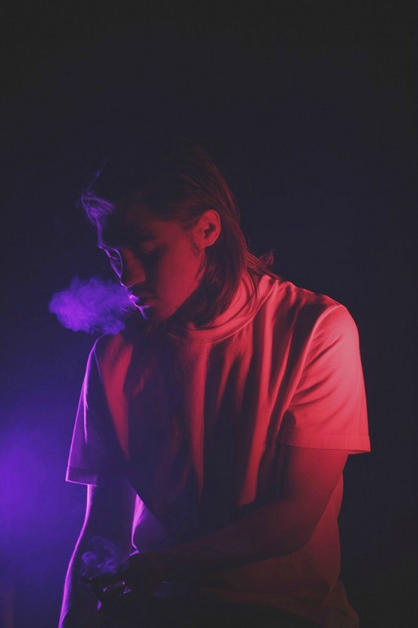
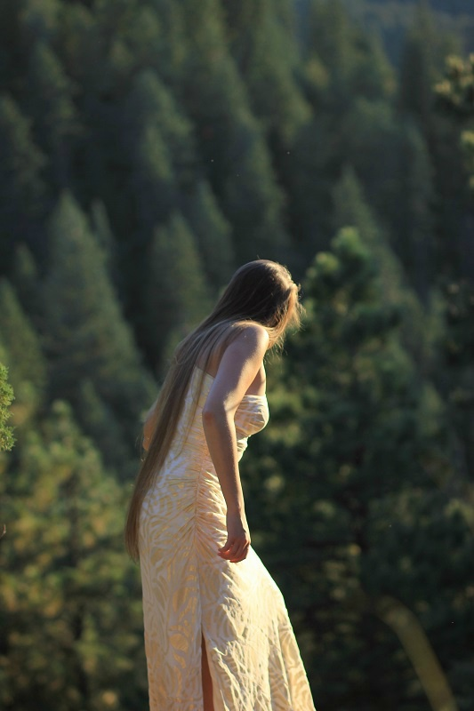
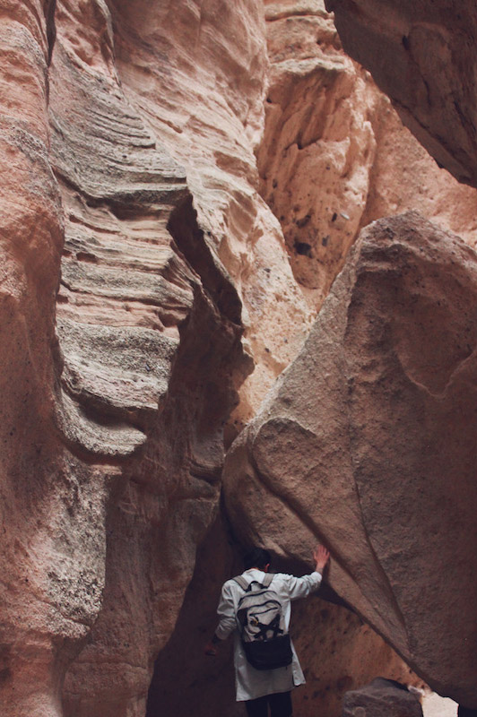
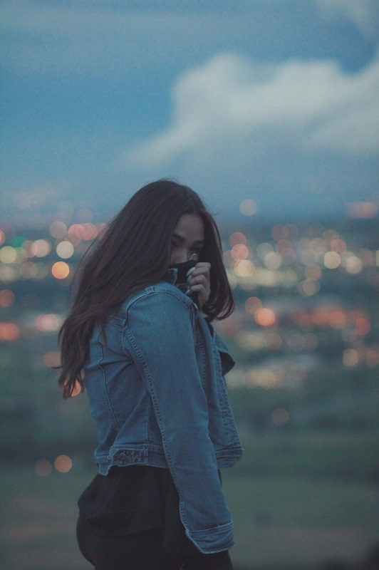

Sketchbook
Just a mind dump of all the different things I do outside of work and freelancing. These keep the soul happy.
Illustrating
I had mostly done traditional drawing all my life, but recently turned to digital drawing to give it a bit of "oomph".


Motion Graphics
This is probably the medium I've been trying to work on the most. Very much still learning, but loving the programs.


Photography
Behind the lens.



